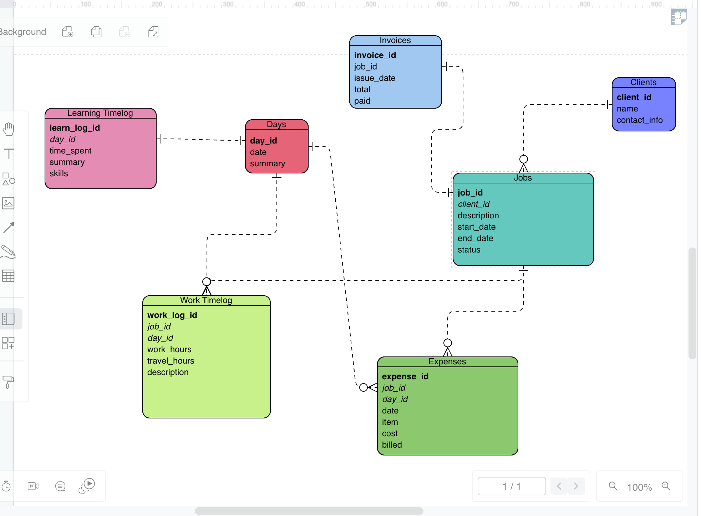
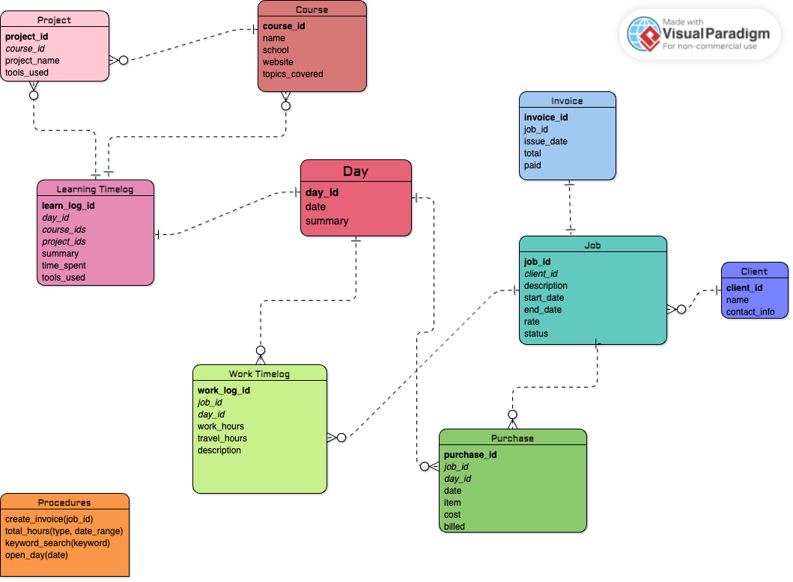
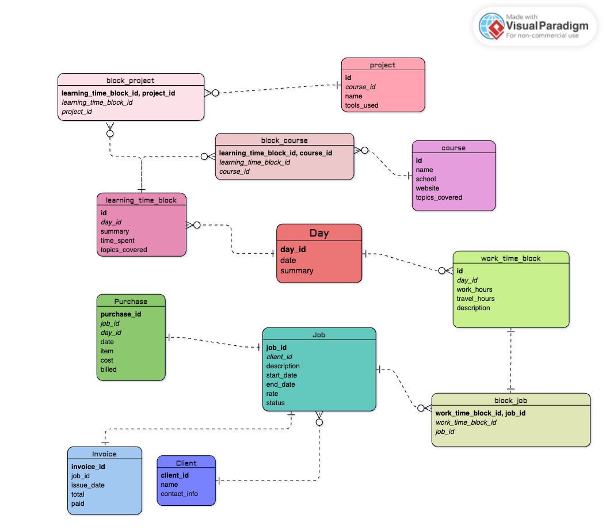

Initial Brainstorming, Choosing a Database Management System
I wanted to create a project that I would actually use on a daily basis. I have a folder in my Notes app on my phone where I keep track of my work hours, school hours, and other things I'm learning. My current process is every few days I open Google Maps and look at my timeline to see where I was and what I was doing. Then I open my Notes app and create a new note with the date and time and write down what I was doing. Then when it comes time to send invoices I have to go through all of my notes one by one and add up the hours.
I started taking programming courses on August 24, 2023. Since then, I've been keeping track of the hours I've put in each day and the things I've been learning. I guess I just have a thing for keeping records. I decided to make a project that would replace my Notes app folder and make it easier for me to keep track of my hours and what I'm learning. I also wanted to make it easy to export the data to CSV and generate invoices automatically. I'd like to be able to see totals and summaries of my hours spent at specific jobs or working on specific projects.
I opted to give MySQL a try. But in the process I learned a bit about the differences between MySQL, PostgreSQL, and SQLite. I realized that SQLite would probably be the best option for a simple single-user project like this. But I also realized that SQLite was NOT the RDBMS to use for my last big project, Bookcase Database. Luckily, I currently have three total users -- me, my aunt, and my friend. So I should be okay for now. However, I'm thinking that I will migrate Bookcase Database from SQLite to MySQL or PostgreSQL in the future. So I decided to try using MySQL for this project to get comfortable with it. PostgreSQL seemed like overkill for this and even Bookcase Database.
Took a minute because of issues with the PATH but I got MySQL installed and a server running. Using MySQL seems like it will be very straightforward. Now that I have that installed and ready to roll, I'm going to start planning the database itself.
References and Resources
Database Design
I decided to start visually. I found a website Visual-Paradigm where I could create a free account and create a visual ERD. I started with the basics. I created a table for Days, Clients, Jobs, Work Hours, Learning Hours, Expenses and Invoices.
Here is what my ERD diagram...(entity relationship diagram, diagram?) looks like as of now
I thought through all the relationships between tables to make sure it all made sense. I decided to add a table for Courses and a table for Projects.
Here is what my ERD looks like now
....And another update to the ERD.
As you can see, I've created the relationships between the tables using association tables (aka junction tables, join tables, etc.).
References and Resources
Creating the database
Time to translate the ERD to a schema.sql file.
I started by reading through the startup guides on MySQL.com. Most of the syntax and commands are very similar or identical to those used in SQLite, so that wasn't hard to get familiar with. I started by translating the ERD to a schema.sql file. Once I had a first draft done, I went and asked my GPT friend to look it over for me. They gave me some feedback suggesting that I look into foreign key constraints and normalization. I was somewhat familiar with both of these terms, and I know we went over them in the course, but I had to do some research to refresh my memory.
Foreign Key Constraints
In summary the purpose of foreign key constraints is to ensure that the data in the database is consistent. It ensures that the data in one table matches the data in another table. For example, if I have a table of clients and a table of jobs, I want to make sure that the client_id in the jobs table matches the client_id in the clients table. If I delete a client, I want to make sure that all of the jobs associated with that client are also deleted.
Normalization
Normalization is a term I was already familiar with in the context of audio engineering. It's the process of making sure that the volume of a track is consistent throughout the track, or in line with another target or standard. In the context of databases, normalization is the process of organizing the data in a database to reduce redundancy and dependency.
- First Normal Form (1NF): Each cell in a table must contain only one piece of information, and there should be no duplicate rows.
- Second Normal Form (2NF): Meet all the requirements of 1NF, and every non-key column must be fully dependent on the table's primary key (not just a part of it).
- Third Normal Form (3NF): Meet all the requirements of 2NF, and there should be no columns that are indirectly dependent on the primary key (i.e., no transitive dependencies).
I also downloaded the MySQL Workbench app and imported my schema and created an ERD with that tool. I found it very useful to be able to include some more information about the values in each table in the diagram. Here is that diagram: